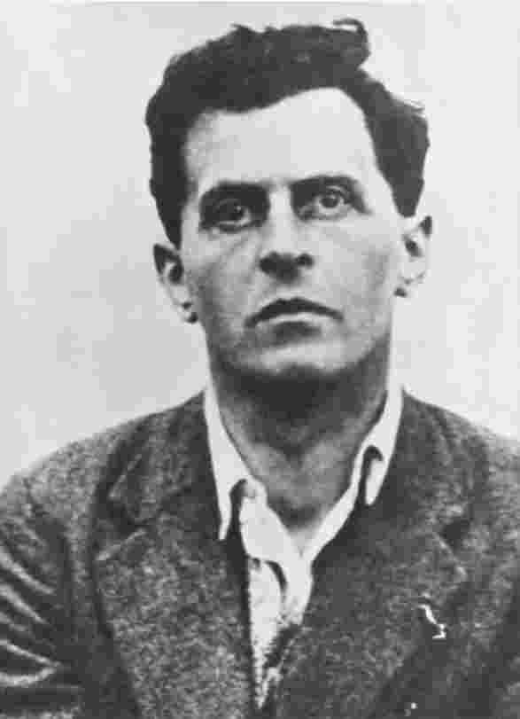
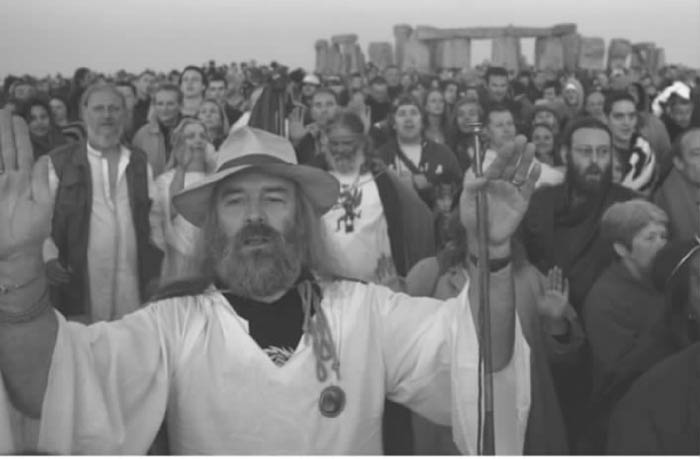
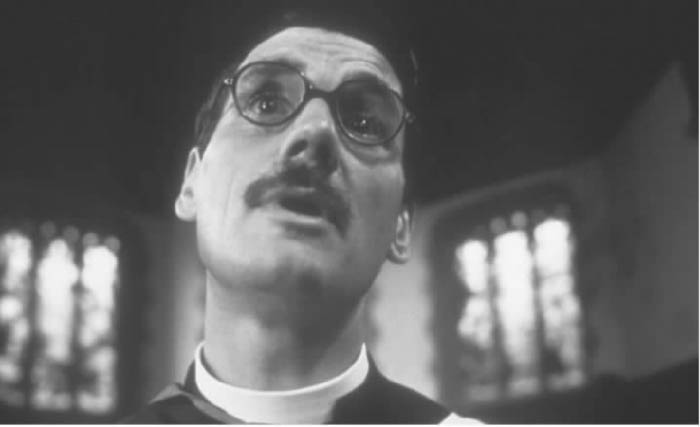

哲学家有一个惹人讨厌的习惯：喜欢分析问题，而不是解答问题。我也准备以分析问题的方式开始我的论述。 [2] “人生的意义是什么？”这是一个真问题还是只是看上去像个问题？是否有什么能充当答案？或者它只是一个伪问题，类似于传说中的牛津大学入学考试题目，只有一句话：“这是一个好问题吗？”
“人生的意义是什么？”初看好像和以下问题差不多：“阿尔巴尼亚的首都在哪？”“象牙是什么颜色的？”但真的差不多吗？是不是更接近这个问题：“几何学趣味何在？”
有些思想家认为人生的意义问题本身并无意义，之所以如此认为，有一个相当坚实的理由。意义是一个语言层面的东西，无关实体。它是我们讨论事情的某种方式，而非像纹理、重量、颜色那样，是事物本身的属性。一颗卷心菜或一张心电图，其本身没有意义，只有当我们谈论它们的时候它们才有意义。照此推论，我们可以通过谈论人生来让人生变得有意义。但即便如此，人生本身还是没有意义，就像一朵浮云本身没有意义一样。比如，声称一朵浮云为真或为假，这根本行不通。真与假仅是我们关于浮云所作的人为命题的功能。与多数哲学主张一样，这个主张也存在问题。后面我们会考察其中的一些。
我们一起来简单地看一个比“人生的意义是什么？”更唬人的质问。也许我们所能提出的最根本的问题是“为什么一切事物会存在，而不是不存在？”为什么会存在那些事物，我们首先可以问其“意义何在”？哲学家们对这个问题是真是伪存在争论，不过大多数神学家的意见是一致的。对多数神学家来说，答案就是“上帝”。上帝之所以被称为世界的“造物主”，不是因为他是一切创造者的创造者，而是说，上帝是世界万物存在的根本原因。据神学家说，上帝乃存在之基础。即使这个世界从不曾开始，这一点对他来说也依然成立。即使某些东西亘古就有，他依然是一切事物之所以存在的终极因。 [3]
“为什么存在万事万物，而非一片虚无？”这个问题可以粗略地转换成“这个世界是如何产生的？”它可被视为因果论的问题：在此情形下，“如何产生”即指“从哪里产生？”但这显然不是这个问题真正想问的。如果我们努力通过讨论世界万物从哪里产生来回答这个问题，我们找到的那些原因就包含在这个世界当中；这就变成循环论证了。只有一个不属于这个世界的原因——一个超验的原因，正如设想中的上帝——才能避免以这种方式被拖回论证本身。所以，这个问题事实上并不关乎世界如何产生，并且至少对于神学家来说，也不关乎世界的目的 ，因为在神学家眼中，这个世界根本没有任何目标。上帝并不是宇宙工程师，在创世时有一个从战略上经过盘算的目的。上帝是一个艺术家，创造世界只是为了自娱自乐，为了享受创世这个过程本身的乐趣。我们由此可以理解，为什么大家觉得上帝有某种扭曲的幽默感了吧。
“为什么存在万事万物，而非一片虚无？”毋宁是一种惊叹：我们很容易推想原本是一片虚无，事实上却最初就存在着一个世界。也许这就是维特根斯坦说“玄妙的不是这个世界的样貌如何，而是这个世界以这样的样貌存在着这一事实 ” [4] 的时候他心里部分所想的。有人可能会说，这是维特根斯坦版的马丁·海德格尔的存在问题，德语叫做Seinsfrage。海德格尔想追溯到“存在是怎么来的？”这个问题。他关心的不是特定实体如何产生，而是另一个让人迷惑的事实，即究竟为什么会有实体存在。这些实体值得我们思考，因为它们本来很可能并不会出现。
不过，许多哲学家，不单单是盎格鲁——撒克逊传统下的哲学家，认为“存在是怎么产生的”是一个典型的伪问题。在他们看来，即使有解答的可能，也不只是难以回答；令人深深怀疑的是，也许没有任何东西需要回答。在他们看来，提这种问题就像一个笨头笨脑的条顿人大吼一声“哇！”。“存在是怎么来的”对一个诗人或神秘主义者来说也许是一个有效的问题，对一个哲学家却不是。尤其是在盎格鲁——撒克逊世界，诗学与哲学两个阵营之间壁垒森严。
在《哲学研究》这本著作中，维特根斯坦对真问题和伪问题的区分非常敏感。一段话可能在语法形式上是一个问题，实际上却不是。或者，语法可能会误导我们，让我们把两种不同的命题混淆起来。“同胞们，一旦敌人被打败，在胜利的时刻我们还有什么做不到？”听起来是一个期待答案的疑问句，但实际上是一个反问句，回答“没有什么！”是不明智的。这句话诘问的语气仅仅是为了提升气势。“那又怎么样？”“你怎么不滚？”“你看什么看？”听起来是问话，实则不然。“灵魂在身体何处？”可能听起来像一个合理的问题，但仅仅是因为我们把它当做“肾脏在身体何处？”一类的问题来思考。“我的嫉妒心在哪儿？”这个问题具有真问题的形式，但仅仅是因为我们无意识地把它和“我的腋窝在哪儿？”当做一类问题。
维特根斯坦进而认为，大量的哲学难题都源于此类语言误用。比如，“我有点痛”和“我有顶帽子”在语法上是相似的，这种相似性可能会误导我们去认为，能够像拥有帽子那样拥有疼痛，或者是拥有更一般的“感受”。但是，说“来，拿着我的疼痛”这种话是奇怪的。询问“这是你的帽子还是我的？”是有意义的，但要问“这是你的疼痛还是我的？”听起来就怪怪的。想象一下几个人在房间里，像玩击鼓传花一样传递疼痛；随着每个人轮流痛得弯下腰，我们大叫：“啊，现在他正在 拥有疼痛！”
这听起来愚蠢，实际上却有一些相当重要的暗示。维特根斯坦将“我有点痛”和“我有顶帽子”在语法上进行区分，不仅向我们展示了“我”与“他”这样的人称代词的用法，而且颠覆了将个人感受当做私有财产的传统思维。实际上，我的感受比帽子更具私人性，因为我可以扔掉自己的帽子，但不能扔掉疼痛。维特根斯坦告诉了我们，语法如何蒙蔽着我们的思维；他的论断具有激进的，甚至是政治上激进的后果。

图1 路德维希·维特根斯坦，常被认为是20世纪最伟大的哲学家
维特根斯坦认为，哲学家的任务不是解决这些疑问，而是消 解 它们——去揭示它们所产生的根源，即各种他所谓的“语言游戏”之间的相互混淆。我们被自己的语言结构所魅惑，哲学家的工作是祛魅，拆解开词语的各种用法。由于语言必然具有一定程度的规整性，它很容易让不同类型的话语显得极为同一。所以，维特根斯坦戏谑般地引用了《李尔王》中的一句话作为《哲学研究》的卷首题词：“我来教你什么是差别。” [5]
不单单是维特根斯坦这么想。尼采是19世纪最伟大的哲学家之一，在怀疑是不是出于语法的原因我们才无法摆脱上帝时，他已经比维特根斯坦先行一步。既然语法允许我们建构一系列名词，而名词代表独特的实体，那么，似乎也可以建构一个位于一切名词之上的名词，一个被称做“上帝”的元实体，若没有它，我们身边所有的小实体都将崩溃。然而，尼采既不相信元实体，也不相信那些日常的实体。他认为，诸如上帝、醋栗等独特客体的理念本身正是语言的具体化效应。就个体自我来说，他当然相信是这样的，“个体自我”在他看来不过是一种省事的虚构。他在上面的评论中暗示说，也许存在着一种人类语法，在这种语法中，不可能发生具体化效应。也许这将是未来的语言，说这种语言的是“超人”（德文叫做Übermensch），而超人已经完全超越了名词和单个的实体，自然也就超越了上帝之类的形而上学幻象。深受尼采影响的另一位哲学家雅克·德里达，在这一论题上更为悲观。他和维特根斯坦一样，认为这种形而上学幻象深植于我们的语言结构之中，根本不可能消除。哲学家不得不向它们展开一场克努特式的永无休止的战争——维特根斯坦视之为某种语言疗法，德里达则称之为“解构”。 [6]
正如尼采认为名词有具体化效应，有人可能会认为在“人生的意义是什么”这个问题中，“人生”一词也是如此。我们稍后会详细考察这一点。也许还可以这样想：这个问题无意识地把自己和另一个问题叠加在了一起，这才是它误入歧途的地方。我们可以说“这个值一块钱，那个也值一块钱，那么两个加起来值多少钱？”似乎我们也可以说“这段人生有意义，那段人生也有意义，那么各段人生加起来有什么意义？”可是，各个部分有意义，并不意味着整体就有一个超越于各部分之上的意义，就像有许多小东西，不能仅仅因为它们都被涂成粉色，就可以组装成一件大东西了。
无疑，以上这些都没能让我们接近人生的意义。不过问题是值得探究的，因为在判定什么可以充当答案时，问题的本质很重要。我们甚至可以说，难就难在提出问题，而不在于寻找答案。众所周知，一个愚蠢的问题只能招来同样愚蠢的答案。提出正确的问题能够打开一片崭新的知识领域，并使其他极其重要的问题随之浮现。处于所谓精神的解释学转向中的一些哲学家，认为现实就是任何能为问题给出答案的东西。只有当我们向现实发问的时候，现实才会按发问的类型回应我们，就像一个惯犯，不加盘问，他不会自动说话。马克思曾经略带神秘地评论说，人类只会提出他们能够解答的问题——他的意思也许是说，假如我们具备提出某个问题的概念装置，那么理论上我们已然有了规定答案的手段。
这部分地是因为，问题不是在真空中提出的。的确，问题并没有让人省心地将答案直接绑在自己身后；但是问题暗示了哪种类型的回应至少可以充当答案。问题指给我们一些有限的方向，提示我们到哪里去寻找答案。撰写一部知识史的简便方法，是从人们认为能够提出或有必要提出的那类问题着手。并非任何问题的提出都可以不拘时间。伦勃朗不可能问“摄影是否淘汰了现实主义绘画”这样的问题。
这当然不是说所有的问题都能解答。我们习惯于有问必答，就像我们总觉得一堆碎片应该拼成原貌。但是世界上总归会有大量问题我们可能一直无法解决，还有许多问题永远不会有人去解答。拿破仑死的时候头上有多少根头发？当时没有任何记录，因而我们永远不会知道。或许人类大脑注定无法解决某些问题，比如智力的起源问题。或许这是因为，人类的进化并不要求我们这么做，正如人类进化也不要求我们去理解《芬尼根守灵夜》或者物理学原理。另一些问题没有答案，仅仅是因为它们本来就没有答案，比如麦克白夫人有几个孩子，或者福尔摩斯的大腿内侧有没有痣。对后面那个问题，肯定的回答或者否定的回答都是无效的。
照这么说，人生的意义这个问题可能确实有答案，但我们永远不知道它究竟是什么。如果是这样，那么我们的处境就好像亨利·詹姆斯的小说《地毯上的图案》里的叙事者，他所仰慕的一位著名作家告诉他，在他的作品中隐藏着某种设计，这个设计内含于每一个词组的意象和转折之中。但还没来得及告知那充满困惑又极为好奇的叙事者谜底，作家就死了。可能作家在故意捉弄叙事者。也可能他觉得作品里有某种设计，实际上却没有。也可能叙事者自始至终都看出了这种设计，自己却浑然不知。也可能呢，他自己能编造出来的任何一种设计都能算做谜底。
甚至还可以这样来设想：不知道人生的意义正是人生意义的一部分，就像我发表餐后演讲的时候不知道自己说了多少个字，这反而有助于我圆满地完成演讲。也许正如马克思眼中的资本主义一样，人生就是依靠着我们不去理解它的根本意义而顺利进行下去的。哲学家阿图尔·叔本华也有这种思想，西格蒙德·弗洛伊德在某种意义上也是如此。写过《悲剧的诞生》的尼采认为，人生的真正意义对人类来说太恐怖了，我们需要各种安慰性的幻象才能继续生活下去。我们所说的“人生”不过是一种必要的虚构。如果不掺入大量的幻想的润滑剂，现实就会慢慢地停顿下来。
另外，有些道德问题也没有答案。因为存在着各种不同的美德，比如勇气、怜悯、正义等，这些美德有时无法互相兼容，有可能引发悲剧性的冲突。社会学家马克斯·韦伯曾以苍凉的笔调评论：“诸种可能的人生态度无法调和，因而它们之间的冲突没有终极的解决方案。” [7] 以赛亚·伯林曾以同样的笔调写道：“在我们所遭遇的日常经验的世界中，我们面临着一些同样绝对的选择，实施某种选择必然会牺牲掉其他选择。” [8] 有人可能会说，这反映了自由主义的悲剧倾向，这种倾向不同于现如今对“选择”或“多元选择”的盲目崇尚，它已经准备好承担追求自由与多元需要付出的代价。这也和另一种更加乐观的自由主义意见相左，后者认为多元主义本质上是有益的，各种道德价值观的冲突反而会激发社会的活力。但事实是，有某些情形下，人不可能全身而退。只要情况足够极端，每一种道德原则都将在接缝处解体。托马斯·哈代深深意识到人可能会在无意中把自己陷入道德困境，在此困境中，不管你作出什么选择都将对人造成严重伤害。倘若一个纳粹士兵命令你交出你几个孩子中的一个来被杀死，你愿意牺牲哪一个？这个问题根本没有答案。 [9]
政治领域亦是如此。恐怖主义的唯一终极的解决方案很显然是实现正义的政治。在这个意义上，恐怖主义尽管残暴，却并不是非理性的：比如北爱尔兰那些通过恐怖手段来促进政治目标的人，在意识到他们所提出的正义与平等的诉求已经得到部分满足后，认为眼下再实施恐怖活动只会产生反面效果，于是同意停止恐怖活动。但也有些进行恐怖活动的伊斯兰原教旨主义者声称，就算阿拉伯社会提出的条件得到满足——巴以问题公平解决，美国从阿拉伯领土上撤销军事基地，诸如此类——他们伤害和屠杀无辜平民的行为也不会停止。
可能真的不会停止。但是这不过是说，问题目前已经升级至所有可行的手段都无法解决的程度。这不是失败主义的看法，而是认清现实。从可纠正的目标所生发出来的毁灭性力量，可能会获得属于自己的致命能量，无法止步。也许现在再来阻止恐怖主义的蔓延为时已晚。现在的恐怖主义问题已经没有解决的办法了——几乎所有的政客都不会公开承认这一点；绝大多数民众，尤其是向来乐观的美国人，都很难接受这一点。尽管如此，事实可能真是这样。为什么人们总是觉得，有问题就必然有解决方案呢？
悲剧乃是诸多无乐观方案的人生意义问题中最有力的之一。在所有的艺术形式中，悲剧最彻底、最坚定地直面人生的意义问题，大胆思考那些最恐怖的答案。最好的悲剧是对人类存在之本质的英勇反思，其源流可追溯至古希腊文化，这种文化认为人生脆弱、危险、极易受到打击。对古代的悲剧家来说，这个世界只能透过理性的微光才能断断续续地看清；过去的行为施重压于当下的欲求，将其扼杀于萌芽状态；残暴的报复性力量把人玩弄于股掌之间，想把他们撕成碎片。只有低下你卑微的头颅，膜拜各种凶恶多端，极少值得人尊敬、更不用说值得崇拜的神灵，你才有望颤颤巍巍地跨过人生的雷区，存活下来。在这片危险地带原本能帮助你站稳脚跟的人性力量，可能经常失去控制，以至于与你敌对并使你堕落。正是在这种令人恐惧的处境下，索福克勒斯《俄狄浦斯王》中的歌队唱出了阴沉的尾章：“没有人是快乐的，直到死亡的那一刻，人才算解脱痛苦。”
这算是对人类存在问题的一种回应，但很难称得上是答案。悲剧经常会展现没有答案的事件：为何个体生命会被碾压或伤害到无法忍受的程度？为何不公正与压迫似乎主宰着人类事务？为何父亲会受到欺骗，去咀嚼自己遇害的孩子那烤焦的肉？或许，唯一的解答隐藏在人类对这些事件的承受力，以及悲剧讲述这些故事的思想深度和艺术技巧之中。最有力的悲剧是一个没有答案的问句，刻意撕掉所有观念形态上的安慰。如果悲剧千方百计告诉我们，人类不能照老样子生活下去，它是在激励我们去搜寻解决人类生存之苦的真正方案，而不是异想天开、渐进改良，也不是感情用事的人文主义或者理想主义的万灵药。悲剧一方面描绘了一个亟待救赎的世界，另一方面也提醒我们，救赎观念本身可能只是另一种把我们的注意力从一种恐怖上移开的手段，这种恐怖可能会把我们变成石头。 [10]
海德格尔在《存在与时间》中说，人类与其他存在物的不同之处在于，他们具有反省自身存在的能力。对人类这种生物来说，不仅存在的具体特征有问题，连存在本身也有问题。按照他的理论，某些具体的处境可能会让一只疣猪感到有麻烦，而人类是一种特殊的动物，他们把自身的处境当做一个问题、一种困惑、一个焦虑之源、一片希望之地，或者是负担、礼物、恐惧或荒诞。这部分地是因为人类意识到他们的存在是有限的，而疣猪想来并不知道自己的有限性。人类也许是唯一一种永远生活在死亡阴影下的动物。
不过，海德格尔的思想有其独特的“现代”特征。我们自然不是在说亚里士多德或匈奴王阿提拉没有意识到生命的有限，虽然阿提拉可能更多地意识到别人而不是他自己的终有一死。同样正确的是，部分地因为人类拥有语言，他们具有把自身的存在对象化的能力，而一只乌龟想必是没有的。我们可以谈论“人的境况”，一只乌龟却不大可能在龟壳里沉思身为乌龟的境况。在这个意义上，后现代主义者和乌龟很像，两者都对自身的境况全然陌生。换句话说，语言不仅使得我们把握自身，也帮助我们从整体上思考自身的境况。我们依靠符号生活，而符号具有抽象把握的能力，我们可以把自己从切身处境中抽离出来，从肉体感官的禁锢中解放出来，进而反省自身的处境本身。然而，抽象能力像火一样有利有弊，兼具创造与毁灭的潜能。抽象能力帮助我们形成人类共同体的意识，它也帮助我们制造化学武器摧毁人类共同体。
要拉开这种距离并不要求我们完全跳脱自身，也不要求我们像奥林匹斯山上的神那样俯视世界。反思自身存在本身就是我们存在的一种方式。即使如后现代主义所说的，“人的境况本身”是一种形而上学海市蜃楼，它仍然是一个能够加以思考的对象。无疑，这与海德格尔的观点有几分相近。其他动物会为躲避追捕、喂养幼雏这样的事感到焦虑，但它们不会产生我们所说的“本体论的焦虑”：感到自己是一个没有方向、多余的存在（有时伴随着极为强烈的惆怅）——如萨特所说，是一股“无用的激情”。
尽管如此，20世纪的艺术家和哲学家远比12世纪的更容易把恐惧、焦虑、恶心、荒诞等当做人类处境的一般特征。现代主义思想的标志性特征是一种信念，认为人的存在是偶然 的 ——没有根基、没有目标、没有方向、没有必然性，人类本来很有可能从未出现在这颗行星上。这种可能性掏空了我们的现实存在，投射出恒常的失落和死亡的阴影。即使是狂喜的时刻，我们也颓丧地知道脚下的根基宛如沼泽——我们的身份与行为缺乏牢固的基础。这可能让我们的美好时光变得更加珍贵，也可能让它们变得毫无价值。
对于12世纪的哲学家来说，上面这种观点没有多少支持者，他们把上帝当做人类存在的坚实根基。但即便如此，他们也不认为人类在世界上的存在是必然的。实际上，那样想会被视为异端。宣称上帝凌驾于宇宙万物之上，意思也就是说上帝本没有必要制造万物。他造出这个世界是出于爱，而非出于必要。造人也是出于同样的原因。人类的存在是没有理由的——是一种恩惠或礼物，而非必不可少。即使人类不存在，上帝也可以活得很好，甚至日子还过得清净些。正如某个不肖逆子的父亲一样，上帝极有可能在暗中懊悔，为什么自己要决定当父亲。人类先是破坏了他制定的律法，然后变本加厉，又背弃了对他的信仰，并且蔑视他的命令。
也许从某种意义上说，追问人生的意义是人类永恒的可能性，是人之所以为人的要素之一。《旧约》中的约伯像萨特一般坚持追问人生的意义。然而对于大多数希伯来人来说，这个问题可能没有意义，因为答案太明显了。耶和华和他制定的律法便是人生的意义——不承认这一点近乎不可思议。就算是约伯，那个把人类的存在（至少他自己的存在）当做越快消失越好的可怕错误的约伯，也承认耶和华无所不在。
在古代的希伯来人看来，问“人生的意义是什么？”就好像问“你相信上帝存在吗？”一样奇怪。而对现在大多数人，包括许多信教的人来说，后一个问题在潜意识中和“你相信圣诞老人存在吗？”“你相信外星人绑架事件吗？”属于同一类问题。他们的想法是，某些存在物，比如上帝、喜马拉雅山雪怪、尼斯湖水怪、UFO来客等等，可能存在，也可能不存在。证据不充分，观点自然有分歧。但古代希伯来人面对“你相信上帝存在吗？”这个问题时可不这么想。由于耶和华的存在显现于整个天地之间，这个问题的意思只能是：“你信仰上帝吗？”这不是一个思辨的命题，而是一个实践问题。它问的不是观点，而是一种关系。
因此，尽管有海德格尔极为普遍的主张，前现代的人也许不像我们现代人那么受人生的意义问题困扰。这不单是因为他们的宗教信仰比我们坚定，还因为他们的社会实践比我们更少有问题。或许在那个时代，人生的意义差不多等于遵循祖先的行事惯例和亘古以来的社会规范。宗教和神话在那里，在那些具有根本重要性的事项上指导你。你有专属于你自己、迥异于别人的人生意义——这种观点没有多少支持者。大致来说，你个人的人生意义就在于你在一个更大的整体中发挥的作用。离开这个背景，你只是一个空洞的符号。“个人”（individual）这个词原本表示“不可化约”（indivsible）或“不可分割”。荷马笔下的奥德赛大约就持这个观念，莎士比亚笔下的哈姆雷特则绝对不这么想。 [11]
感觉你的人生意义属于一个更大的整体，这和强烈的自我意识并不矛盾。这里的关键是个体自我的意义，而不是自我的客观状况如何。这不是说前现代的人不关心“我是谁”或“我在做什么”之类的问题，只是他们绝大部分不像阿尔贝·加缪或T.S.艾略特年轻时期那样为这种问题焦虑。这很大程度上和他们的宗教信仰有关。
如果说前现代文化大体上不像弗兰兹·卡夫卡那般为人生的意义所烦扰，后现代文化似乎也是如此。置身于发达的后现代资本主义社会的实用主义和市侩气息中，加上它对远大图景和宏大叙事的怀疑、对形而上事物的固执的祛魅，“人生”和许多其他总体性概念一样已经名声扫地。我们被诱使只考虑生活中的小问题，不去思考大问题——讽刺的是，与此同时，那些试图毁灭西方文明的人做法恰恰相反。在西方资本主义与激进的伊斯兰世界之间的冲突中，信仰的缺乏直面着信仰的过剩。西方世界发现自己正遭受一种狂热的形而上层面的攻击，而自己却处于可以说是在哲学上被解除了武装的历史时刻。关涉信念之处，后现代主义宁愿轻装上路：后现代主义诚然有各种各样的信念（beliefs），但没有信仰（faith）。
法国哲学家吉尔·德勒兹等后现代主义思想家甚至认为，“意义”这个词本身就很可疑。“意义”预设了一个事物能代表或代替另一个事物——有些人觉得这种观念已是明日黄花。“阐释”这个观念本身因此饱受质疑。事物该是什么就是什么，而非代表其他东西的神秘符号。所见即所是。意义和阐释暗示了信息和机制的隐藏性，即表象与深度的叠加；但是对于后现代主义来说，“表象/深度”这整套思维带有陈旧的形而上学意味。“自我”的观念同样如此，它已经不再关乎神秘的褶层和内在的深度，而是直观可见；自我是一个去中心化的网络，而不是神秘难解的精神。
这和用寓言来阐释世界的前现代思维不同。在寓言中，事物的意义并未直接呈现于表面；相反，它们必须被理解为某种“文本”或潜在真理的符号，通常是道德或宗教符号。在圣奥古斯丁眼中，直观地理解客体，这是一种世俗的、堕落的存在模式；相反，我们必须采用符号学的方式去解读它们，超越它们本身而指向宇宙这篇神圣的文本。符号学和拯救是连在一起的。现代思想在某种意义上与这种联系模式割裂开来，但在另一种意义上仍然忠实于这种模式。意义不再是埋藏在事物表面之下的精神本质。但意义仍然要被挖掘出来，因为这个世界不会自发地揭示它。这种挖掘行为有个名字叫做“科学”，在某种观点看来，科学就是在揭示事物运行所遵循的隐含的规律和机制。深度尚未消失，但现在在深度中发挥作用的是自然，而不是神性。
后现代主义随即把这个世俗化进程又往前推进了一步。后现代主义坚称，只要我们还有深度、本质和根基，我们就仍然活在对上帝的敬畏之中。我们还没有真正把上帝杀死并埋葬。我们只是给他新换了一套大写的名字，如自然、人类、理性、历史、权力、欲望，诸如此类。我们并未摧毁整套过时的形而上学和神学体系，只是用旧瓶装了新酒。“深刻的”意义总会诱惑我们去追寻那诸意义背后的元意义这种妄想，所以我们必须与之切割，才能获得自由。当然，这里的自由不是自我的自由，因为我们已经把“自我”这个形而上学本质同时消解掉了。到底这一工程解放了谁，这还是一个谜。情况也可能是，虽然后现代主义厌恶一切绝对根基，它还是偷偷地加入了一个绝对的信条。当然，这个绝对信条不会是大写的上帝、理性或历史，但它的作用同样是根本性的。像其他的绝对信条一样，再往它下面深挖是不可能的。对后现代主义来说，这个绝对信条叫做“文化”。
***
原本被视为理所当然的那些身份、信念和规则陷入危机之时，人生的意义之类的疑问就会浮现出来，变成严肃的问题。最伟大的悲剧作品往往也是在这些危机时刻出现，也许并非巧合。这不是要否认，人生的意义问题可能一直都是有效的。但是，海德格尔的《存在与时间》的写作时间恰好是历史动乱时期，问世是在一战之后，这与该书的观点无疑存在关联。萨特的《存在与虚无》探讨的也是此类重大主题，出版时间是二战时期；存在主义，及其对人生的荒诞感，总体上正是在二战后几十年间兴盛起来的。也许每一个人都会思考人生的意义；但有些人，由于充分的历史原因，想得比其他人更迫切些。
如果你被迫在总体上探究存在的意义，那么，结果很有可能是失败的。探究某个人自己的存在意义则是另一回事，因为他可能会说，这种自我反思与过一种完满的生活密不可分。一个从未问过自己人生过得如何、该如何更好地生活的人，会显得尤其缺乏自我意识。很有可能，这个人的生活在许多方面实际上没有看上去那么好。她没有自问过生命中各种境况的好坏，这本身就说明生活本可以过得更好一些。如果你的生活过得特别美好，其中一个原因大概是，你时常思考生活是不是需要有所改变，或者作一些大的调整。
无论如何，意识到自己过得不错，这很可能会提高你的幸福感；给自己的满足感锦上添花，何乐而不为呢？换言之，只有不知道自己快乐时才是快乐的，这话是错的。那是浪漫主义者的天真想法，对这种人来说，自我反思总是让人心里疙疙瘩瘩。这可被称为“悬崖间走钢丝”的人生理论：你稍微思考一下，幸福感立刻就坠入谷底。但是，知道自己过得如何，这是决定自己是去努力改变生活还是维持原状的必要条件。了解境况是幸福的助手，而非敌人。
不过，问人类存在的意义，这个问题本身就表明我们可能集体丧失了生存之道，不管我们作为个人活得如何。1870或1880年的英国某地，维多利亚时代关于这一问题的某些信条开始瓦解；所以，托马斯·哈代和约瑟夫·康拉德这样的人提出了人生的意义问题，其关切程度之迫切是威廉·萨克雷和安东尼·特罗洛普无法想象的。还有比这些作家年代更早的人，简·奥斯丁。艺术家们固然在1870年前就提出过人生的意义问题，但极少是作为整个追问式文化 的一部分。20世纪前几十年，这一文化携本体论的焦虑，以现代主义的形式表现出来。这一思潮产生了若干西方世界有史以来最杰出的文学艺术。几乎每一重传统价值、信念和制度都发出了挑战，时机已然成熟，艺术可以提出关于西方文化本身之命运的最根本的问题，并进而提出关于人性本身的命运问题了。很可能某个乏味而庸俗的马克思主义者，会找到这次文化剧变与维多利亚晚期经济萧条、1916年全球帝国主义战争爆发、布尔什维克革命、法西斯主义兴起、两次世界大战间经济衰弱、斯大林主义兴起、大屠杀爆发等事件之间的关联。我们自己则宁愿把思考限定在不那么庸俗的精神生活上。
这股丰富而不安的思想气质在不久前有一次余波，即存在主义；但是，到1950年代基本上就退潮了。这一思潮在1960年代的各种叛逆文化中有所展开；但到了1970年代中期，这种精神追求逐渐衰弱，在西方世界被日趋严酷和实用主义的政治环境遏制。后结构主义，以及随后的后现代主义，认为把人生当做一个整体来思考，这是声名狼藉的“人文主义”——或者说，实际上是某种“总体化”理论，而“总体化”理论直接酿成了极权主义国家集中营的惨剧。已经没有什么人性或人生可供沉思。只有种种差异、特定文化和本土境况才是思考的对象。
20世纪之所以有比以往多数时期更为痛苦的关于存在之意义的思考，一个原因或许在于，这个世纪的人命薄如纸。这是史上最血腥的时代，数以百万计的无辜生命遇害。如果生命在实际生活中被如此贬低，那么，人们自然想要在理论上质问其意义。但是，这里还有一个更为普遍的问题。现代时期的一个典型特征是，人类生命的所谓“象征维度”被一直挤到了边缘。在这一维度之内，有三个领域在传统上至关重要：宗教、文化和性。这三个领域随着现代时期的展开而越来越远离公共生活的核心。在前现代社会，它们的绝大部分既属于私人领域，也属于公共领域。宗教不但关乎个人良心和自我救赎，它还是国家权力、公共仪式和国家意识形态的内容。作为国际政治的一个关键因素，宗教塑造了从国内战争到王朝联姻等各个国家的历史命运。各种征兆表明，我们身处的时代将在某些方面改变这一局面。
至于文化领域，过去的艺术家不是那种孤独地躺在粗俗的波西米亚咖啡馆中的局外人，他们更像是公务员，在部落、家族或宫廷中行使规定的职责。如果没有受雇于教会，他就可能是受国家或某个有权势的赞助人雇佣。艺术家们一旦收到报价不菲的任务，去为一次追思弥撒谱曲，他们就不会那么热情地去冥思苦想人生的意义。更何况，这一问题很大程度上已经由他们的宗教信仰解决了。性，一如既往地是关于肉欲之爱和个人满足的问题。但是，它与亲缘、继承、阶级、财产、权力和地位等制度的关联程度，也要比今天的大多数人身上所表现的更加深入。
以上描述并不是要美化过去的好时代。过去的宗教、艺术和性在公共事务中的作用也许比现在更加重要；但是，出于同样的原因，它们也可能成为政治权力的忠诚侍女。一旦摆脱政治权力的束缚，它们就能享受某种从未设想过的自由和自主。但是，这种自由代价高昂。这些象征性活动继续扮演重要的公共角色；但是总体上，它们逐渐转入私人领域，在这里真正变成私人事务，其他任何人都不能干预。
这和人生的意义问题又有什么关系呢？答案是，这些正是人们传统上探寻自身存在之意义和价值时所指向的领域。爱、宗教信仰以及对家族血缘与文化的眷恋：很难找到比这些更为根本的生命理由。事实上，许多世纪以来，很多人愿意为了这些理由而献出生命或亮出屠刀。公共领域自身越是日益丧失意义，人们就越是急切地想寻求这些价值。事实和价值似乎分离了，前者变成了公共事务，后者则属于私人事务。
资本主义现代性看起来把一套几乎纯粹是工具性的经济制度强加给了我们。它是一种生活方式，追求权力、利润和物质生存条件，而不是培育人类共享和团结等各种价值。政治领域的内容更多的是管理和控制问题，而不是齐心协力塑造一种共同生活。理性本身被贬低为自私自利的算计。道德也越来越变成一桩私人事务，成为在卧室而不是会议室中讨论的话题。文化生活在某种意义上变得愈发重要，成长为物质生产的一个单独的行业或分支。但在另一种意义上，文化又降格为一种社会秩序的门面装饰，这种社会秩序只关心那些可以标价和测算的东西。文化现在主要变成了人们工作之余打发时间的无害手段。
但这里有一个讽刺。文化、宗教和性越是被迫充当衰落的公共价值的替身，它们就越无力扮演这种角色。意义越是集中在象征领域，这一领域就越是被意义施加的压力所扭曲。结果，生命的这三个象征领域都开始显出病征。性演变成色欲的沉迷。性是这个枯燥的世界中仅存的少数几种快乐源泉之一。性刺激和性暴力代替了已经丧失的政治斗争热情。艺术的价值也相应地膨胀。对于唯美主义运动来说，艺术现在完全是一种生活方式。对于某些现代主义者来说，艺术代表了人文价值在人类文明中最后一片飘摇的立足之地——艺术本身对文明已经嗤之以鼻。然而，这只体现在艺术作品的形式上。由于艺术内容不可避免地反映着周遭的物化世界，它无法提供持久的救赎资源。

图2 在巨石阵举行的“新时代运动”集会
同时，宗教越是充当公共意义不断流失后的替代选择，它就越是被灌输为各种糟糕的原教旨主义。若非如此，则被灌输为新时代运动的噱头。简单地说，宗教精神变得要么硬如岩石，要么沉闷乏味。人生意义问题的解释权，现在掌握在宗教领袖和精神调理师、制造迷醉式满足感的技术专家，以及心灵按摩师的手中。你只要掌握正确的技术手段，就能确切地在短至一个月的时间内把无意义感像多余的脂肪一样排出体外。被谄媚冲昏了头脑的名流们转而寻求犹太教神秘主义哲学和科学论派的解释。他们听到那种陈腐的谬论感到很受用，这种谬论认为精神必然是奇特而神秘的，而不是实践的、物质的。毕竟，名流（至少在内心）想要逃脱的正是表现为私人飞机和成群保镖的物质。
对于以上各类人来说，精神不过是物质的对立面。它是一种营造出来的神秘领域，可用来补偿世俗声誉的虚无。精神性的东西越是模糊——越是与一个人的经纪人和会计师的冷漠算计不相像，似乎就越是有意义。如果说日常生活缺乏意义，那么，它就需要人为地用材料来填充。偶尔可以加点占星学或者巫术，就像给每日膳食添加几片维生素一样。你若正在无趣地为自己物色下一套配有五十间卧室的豪宅，这时候突然来研究一会儿古埃及人的秘方，这该是多么惬意的调剂啊。更何况，既然精神性全部存在于意识中，你就不必去做任何麻烦的事，比如把金钱散发给无家可归的人以摆脱操持豪宅的烦恼。
事情还有另一面。如果说象征领域已从公共领域中脱离了出来，那么它仍然遭受着后者的侵扰。性被包装成了市场上贩卖的牟利商品，文化则成为逐利的大众媒体的主角。艺术变成了金钱、权力、地位和文化资本的事。各地文化现在成了旅游产业包装和贩售的异域风情。甚至宗教也把自己改造成营利的产业，电视里的福音传道者们从虔诚而天真的穷人手中骗取血汗钱。于是，象征领域和公共领域中最糟糕的东西都被强加到我们头上。传统上充满意义的地方不再对公共领域真正有影响力；但它们还受到商业力量的猛烈侵占，于是变成意义流逝的帮凶，这种流逝正是它们曾努力抵抗过的。现已私人化的象征生活领域不堪烦扰，开始提供自己无力恰当提供的东西。结果，甚至在私人领域，寻找意义也变得愈发困难。文明焚毁、历史崩溃之际，你想混混日子，或者摆弄摆弄自己的花园，已经不再像以前那样行之有效了。
图3 原教旨主义派头十足的美国福音派电视演说家杰里·福尔韦尔
在我们的时代，最流行、最有影响力的文化产业之一无疑是体育。如果你问，是什么为现在许多人，尤其是男人的人生提供了意义，回答“足球”总不会错。也许，没有多少人愿意承认；但体育运动，在英国特别是足球，已经取代了许多高尚的事业——宗教信仰、国家主权、个人荣誉、道德归属；几个世纪以来，人们一直愿意为这些事业献出自己的生命。体育包含不同团体间的忠诚和敌对、象征性仪式、炫目的传奇故事、偶像般的英雄、史诗般的战斗、华丽的美感、身体上的实现、精神上的满足、壮丽的奇观和强烈的归属感。体育还创造了人群的集体感和直接的肉体参与，这是电视无法做到的。失去这些价值，许多人的生活就会变得空空荡荡。现在人民的鸦片不是宗教，而是体育。实际上，在基督教和伊斯兰教原教旨主义泛滥的世界里，宗教与其说是人民的鸦片，不如说是大众的强效可卡因。
我们这个时代假冒的心灵导师和智者，代替了那些业已失败的传统神灵。例如，哲学家们似乎已被贬为穿着白色外套的语言技师。没错，把哲学家当做人生意义的向导是一种普遍的谬见。但即使是这样，哲学家肩负的工作也不该仅仅局限于通过辨析“什么都无所谓”和“什么都无聊”之间的语法差别，来劝阻自杀者跳窗轻生吧。 [12] 同时，日益发展的世俗化进程，以及教会所犯的各种罪行和蠢事，败坏了神学的清誉。实证主义社会学和行为主义心理学，以及丧失远见的政治学，一道促成了知识分子阶层的背叛。人文学科越是为经济需要所吸纳，就越是容易放弃探究那些根本的问题；所以，塔罗牌贩子、金字塔式营销者、亚特兰蒂斯的化身和“灵魂排毒者”之流也就越是蜂拥着去填充知识分子所放弃的阵地。人生的意义，现在可是一项获利颇丰的产业。题为“商业银行家的形而上学”之类的书籍有很大的市场。不再沉迷于赚钱的男男女女们，转而向心灵真理的供应商寻求帮助，让后者靠贩卖这些东西又大捞一笔。
图4 大悲大喜：一位体育迷
在现代性的纪元，重新挑起人生的意义问题还有什么其他理由呢？有人可能猜想，现代生活的问题是，意义既太多，又太少。我们身处现代性的时代，即说明我们淡忘了所有最根本的道德和政治问题。在现代时期，已经有过大量关于人生意义的争论，但论辩者们谁也不服谁。这说明，任何单一答案都必定显得可疑，因为有太多诱人的替代性方案可供选择。我们由此陷入某种恶性循环。一旦传统信仰在历史危机面前瓦解，人生的意义问题就会把自己推向前台。但是，这一问题是如此突出，以至于引发了广泛的回应；解决方案多得令人不知所措，从而削弱了其中任何一种方案的可信度。感觉提出人生的意义问题很重要，这本身就表明该问题很难回答。
在这种情形下，有些人总是有可能在多样的观点本身中找到人生的意义，或至少是其中相当多的一部分。持这一想法的人通常叫做“自由主义者”，尽管其中有些人也被称做“后现代主义者”。对他们而言，重要的不是去寻找人生意义问题的确切答案，而是有那么多极为不同的解答方式这一事实。实际上，能够在那么多观点中选择，这种自由本身可能就是我们所能碰巧找到的最珍贵的意义。所以，在某些人看来毫无希望的碎片化世界，在另一些看来则是鼓舞人心的自由世界。
对于大多数热情地追求人生意义的人而言，最重要的是追求的结果。对自由主义者和后现代主义者来说，最重要的则是令人愉悦的众声喧哗；在他们看来，对话和我们要挖掘的意义同样重要。人生的意义就在于追寻人生的意义。许多自由主义者更喜欢问问题，而不是找答案，因为他们觉得答案过于限制人的思维。问题是自由浮动的，答案则不是。关键是要保持好奇心，而不是用某种枯燥的答案对这个问题下定论。的确，这个思路没法很好地解决“我们怎样才能在他们饿死之前提供食物？”或“这是不是预防种族谋杀的有效方式？”这类问题，但是，也许这些问题对自由主义者来说级别太低了。
可是，多元自由主义也有自身的局限。因为，为人生意义问题提出的某些答案不仅互相冲突，甚至完全相悖。你可以认为人生的意义在于关怀弱小，而我则认为人生的意义在于尽量欺凌患病、无助的弱者。我们两人的观点可能都是错的，但不可能都是对的。即便是自由主义者在这里也一定会强烈地排斥某些观点，排除任何可能危害自由和多元的解决方案（例如建立一个极权主义国家）。自由绝不容许摧毁自身的根基，尽管激进主义者会声称，在资本主义条件下自由每天都在自掘坟墓。
在此意义上，多元主义也有自身的局限，即如果只有一种 确定的人生意义，它对每个人来说就没有区别了。我可以说“我的人生的意义是，只要还有爬行的力气，我就要喝威士忌”；但是，我不能说“对我而言，人生的意义就是喝很多威士忌”，除非后一句是前一句的另一种表达方式。这就好似宣称“对我而言，雪花的颜色是略带品红色的青绿色”，或者“对我而言，‘木桩’的意思就是‘睡莲’”。意义不能由我任意决定。如果人生确实有某种意义，那也是对你、对我、对任何其他人的意义，是我们认为或希望人生所拥有的任何意义。不管怎样，也许人生有多重意义。我们为何想象它只有一种意义呢？就像我们能赋予人生多重意义一样，也许人生本来就有好几重内在意义——如果人生确有内在意义的话。或许，人生有多重目的同时在起作用，其中有些目的互相矛盾。又或许，人生时不时地会改变目的，就像我们所做的那样。我们不应该预设，那些给定的或内在的意义总是固定不变、独一无二。假使人生的确有一个目的，但这个目的与我们自己的努力方向完全相悖呢？情况可能是，人生有个意义，但历史上的绝大多数人对这个意义有所误解。如果说宗教是谬误，那么正是在这个意义上的谬误。
不过，本书的许多读者很可能会像怀疑圣诞老人的真实性一样怀疑“人生的意义”这个短语。这个短语看上去是个别致的概念，既真诚朴素，又自命不凡，很适合做“巨蟒”喜剧小组的讽刺主题。 [13] 现在许多受过教育的西方人士，至少是宗教氛围过浓的美国以外的西方人，相信生命不过是进化过程中的偶发现象，它与一缕微风的起伏或腹中的一声闷响一样，没什么内在意义。然而，人生没有既定的意义，这就为每个个体提供了自主创造意义的可能。如果我们的人生有意义，这个意义也是我们努力倾注进去的，而不是与生俱来的。

图5 “巨蟒”喜剧小组的电影《人生的意义》中油腔滑调的圣公会牧师，由迈克尔·帕林饰演
从这个理论上讲，我们是书写自我的动物，无须由“人生”这个抽象概念来叙述自己的一生。对尼采或王尔德来说，我们所有人（只要有勇气）都能够成为以自己为作品的伟大艺术家，手中握着泥土，把自己捏塑成某个精致而独特的形象。关于这一点，我认为传统智慧的观点是，人生的意义不是预先规定好的，而是人为建构出来的；我们每一个人都有极为不同的建构方式。无疑，这里面包含许多真理；但因为这也很枯燥乏味，我想以简短的篇幅来加以考察。本书的部分内容将专门质疑这种把人生的意义当做个人事业的观点，看看这种观点能有多大说服力。